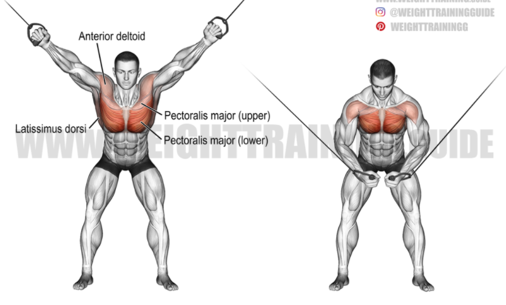

가슴 운동
-
프레스
- 플렛 벤치프레스
헬스 근력운동은 가장 효과적이고 많이 실시되는 3대운동을 꼽는다. 벤치프레스는 이에 속하는 운동으로, 중급 이상의 난이도를 가졌으나 운동 효과가 워낙 좋아서, 근육을 키우는 이라면 누구나 즐겨실시하는 운동이다. 벤치프레스는 대표적인 가슴 근육운동이다. 상체의 대근육 중 하나인 가슴근육의 두께와 넓이를 키우는 복합관절운동으로써, 주근육은 가슴근육이지만 팔과 어깨도 함께 사용하여 자세를 달리 잡으면 팔근육이나 어깨근육에도 보다 더 자극을 줄수 있는 운동이다. 운동 방법은 우선 어깨 들림을 방지하고 효율적으로 운동하기위해 견갑골(날개뼈)를 후인 하강 시켜주고 허리를 아치형태로 만들어 주며 가슴을 들어준다. 이후 바벨을 내렸을때 팔꿈치가 지면과 수직이 될정도로 잡은후 젖꼭지 쪽으로 가슴근육의 이완을 느끼며 천천히 내렸다가 다시 수직으로 올려주면된다. 주의사항은 어깨가 들리지 않게 견갑골을 잘 고정 시켜주고 의식해 준다. 그리고, 팔꿈치를 너무 옆으로 하지말고, 앞쪽으로 모아준다. 또한 바벨을 내릴때 가슴에 바를 닿게 하여 튕기게되면 가슴자극이 끊기기 때문에 끝까지 가슴근육을 이완하다가 가슴에 닿기 전에 바를 올려준다.
- 인클라인 벤치프레스
 인클라인 벤치프레스의 경우 방법은 플랫 벤치프레스와 동일하나, 벤치의 각도를 올린 채로 수행해준다. 인클라인 벤치 프레스의 경우 가슴 상부부분을 발달 시키기 좋은 운동이다.
주의 사항은 벤치를 너무 높일경우 어깨에 개입이 커지기 때문에 초심자의경우 너무 벤치의 각도를 높이지 안아도된다. 또한 이운동은 플랫 벤치프레스보다 높은 중량을 다루기 힘드므로 자신에게 맞는 중량을 찾아
수행해 주면 된다.
인클라인 벤치프레스의 경우 방법은 플랫 벤치프레스와 동일하나, 벤치의 각도를 올린 채로 수행해준다. 인클라인 벤치 프레스의 경우 가슴 상부부분을 발달 시키기 좋은 운동이다.
주의 사항은 벤치를 너무 높일경우 어깨에 개입이 커지기 때문에 초심자의경우 너무 벤치의 각도를 높이지 안아도된다. 또한 이운동은 플랫 벤치프레스보다 높은 중량을 다루기 힘드므로 자신에게 맞는 중량을 찾아
수행해 주면 된다.
- 디클라인 벤치프레스
디클라인 벤치프레스의 경우도 마찬가지로 플랫 벤치프레스와 방법은 동일하나, 벤치의 각도를 내린채로 수행해 준다. 디클라인 벤치프레스의 경우에는 가슴 하부부분을 발달 시키기에 좋은 운동이다. 주의사항은 디클라인 벤치프레스 또한 플랫 벤치프레스보다 중량을 다루기 힘드므로 더 가벼운 무게를 사용해 주면 좋다. 바벨을 자신의 시선에서 직선이 되게 올리는게아니라 항상 바닥과 수직이되도록 해주는게 중요하다. 바벨을 올릴때 가슴-겨드랑이쪽에 힘을 주며 올릴시 자극을 잘 느낄 수 있다.
- 덤벨 벤치 프레스
덤벨 벤치 프레스 운동 또한 벤치프레스와 운동 방법은 동일하나, 덤벨을 이용하기 때문에 바벨로 사용하는 플랫 벤치프레스보다 더 자유로운 가동범위로 가슴을 최대한 신장 수축을 할 수 있는 장점이 있다.
- 체스트 프레스
체스트 프레스는 체스트프레스 머신을 이용 하여 하는 운동이다. 머신의 장점은 머신 특성상 자극을 찾기 좋은 궤도가 정해저 있어, 자극을 찾기 매우 훌륭하다. 안장을 자신의 맞게 설정하고 중량을 설정해 그냥 벤치 프레스 하듯 가슴근육으로 밀어주면 끝이다. 개인적으로 가슴의 고립이 좋고, 효율적으로 운동을 할 수 있어 자주 애용하는 편이다.
- 플렛 벤치프레스
-
플라이
- 덤벨 플라이
플라이동작은 가슴 안쪽까지 자극을 줄 수 있는 운동이다. 팔을 날개짓 하듯 벌렸다 모았다 하는 운동으로 가슴 바깥쪽 라인을 다듬어 준다. 초심자의 경우 가슴 안쪽까지 자극을 주기힘드므로 넓은 가슴을 만든다는 운동으로 처음에 임해 주면 좋다. 중상급자경우 안쪽까지 자긍을 줄수 잇어, 팔꿈치의 각도, 가동버위 등 동작에 유념하여 운동해 주면 아주 좋은 운동이다. 벤치에 누워 덤벨을 양쪽에 잡고 팔꿈치를 약간 굽혀주고, 턱을 당긴상태에서 가슴을 열어 진행해준다. 덤벨올렸다가 벌려주어 가슴근육을 이완시키고, 다시 모아주는 행위를 반복하며 진행해주면 된다.
- 펙덱 플라이
펙덱 플라이 운동은 기계를 통해서 수행하는 머신 운동이다. 따라서 초심자도 어려움없이 플라이 운동을 실시 할 수 있다. 운동방법은 덤벨 플라이와 유사하다. 동작이 간단하기 때문에 중량 설정을 자신의 상태에 맞게 조절하고 실시하면 된다. 의자에 앉을때는 등의 윗부분과 힙 부분을 바르게 붙이고 가슴이 쫙 펴지도록 허리는 약간 아치형을 만들어 준비한다. 팔꿈치의 각도는 직각이 되도록 패드에 붙이고 손잡이를 잡아 숨을 내쉬면서 팔을 벌린다. 팔을 양쪽으로 활짝 벌렸을때 팔꿈치는 약간 굽혀져 있는것이 정상이며 넓은 W자 자세가 되게끔 동작을 수행한다. 가슴을 활짝 폈다 모아줌으로써 안과 밖 모두 자극을 줄수 있고 가슴근육 선명도를 높일수있다. 유의 사항은 어깨-상완 부위가 너무 올라가지 않도록 유의하며 팔꿈치를 통하여 이동하는 느낌으로 실시한다. 단순히 손의 힘으로 잡아당기는 것이 아니라 겨드랑이에 힘을 주고 팔꿈치를 통해 이동하는것처럼 운동한다.
- 케이블 크로스오버
 케이블 크로스 오버는 자유로운 범위로 수행 할수 있어 가슴을 제대로 자극할수있는 운동이다. 다양한 자세와 동작으로 부위를 골고루 자극하기도 좋다. 하지만 제대로 운동해야만 효과를 줄수 있으며 생각보다 어려운 운동이므로, 운동방법을 잘 보고 제대로 수행해야 한다. 케이블 크로스 오버는 가슴을 모아주는 동작으로, 안쪽 근육을 자극하고 가슴 근육을 선명하게 만들어준다. 자세를 취함에 따라서 가슴 중간부터 하부 근육에 자극을 줄 수 있고 상부 근육에 자극을 줄수도 있다. 이 운동은 폭이 넓은 케이블 기구를 사용해 운동하는데, 하부에 집중한다면 폭이 좁은것을 사용해도 좋다. 케이블은 위에서부터 아래로 끌어당기는것이 기본인데, 상부 발달을 노린다면 반대로도 실시할수있다. 운동 방법은 손잡이를 잡고 가운데 자리를 잡아 준비한다. 발의 간격은 약간 좁게 서도 좋고 동작을 수행하기 편한 보폭으로 잡아준다. 상체는 살짝 앞으로 숙여주고 무릎도 살짝 굽혀준다. 손잡이를 중앙 하단으로 끌어 내려 모아주는데, 팔은 약간 안쪽으로 굽혀져 있어야 한다.
- 덤벨 플라이
-
맨몸 운동
- 푸쉬업
푸쉬 업은 누구나 언제 어디서든 쉽게 할 수 있는 대표적인 근력운동이다. 푸쉬업은 자세에 따라 가슴과 삼두, 어깨에 자극을 줄 수 있다. 푸쉬업의 자세는 제일 중요한 전신을 중립으로 유지 시켜준다. 엉덩이가 너무 내려가거나 올라가지 않게 하고, 어깨 또한 너무 앞으로 나가버리면 안된다. 그상태로 팔은 자연스럽게 어깨보다 조금 넓게 벌린후 가슴근육의 이완을 느끼며 내려갔다가, 땅을 민다는 느낌으로 다시 올라가주는 행위를 반복하면 된다. 푸쉬업도 각도에 따라 윗가슴과 아랫가슴을 타겟으로 운동이 가능하다.
- 딥스
가슴운동 딥스는 가슴과 삼두, 어깨를 발달시키는 운동이다. 딥스는 평행봉 체조에서 가져온 운동으로 평행봉 사이에서 상체 근육을 이용하여 몸을 위아래로 움직이는 운동이다. 벤치프레스와는 달리 맨몸으로만 실시하더라도 자신의 체중을 컨트롤 해야하기 때문에 초보자라면 쉽지 않은 운동이다. 딥스의 경우 가슴 하부쪽 근육을 많이 동원하기 때문에 푸쉬업과 딥스를 병행한다면 맨몸 운동만으로도 멋진 몸을 만들 수 있다. 딥스는 푸쉬업처럼 전신의 근육을 사용하기 때문에 좋은 운동이다. 딥스의 자세를 알아 보겠다. 대부분 사람들은 딥스를 할 때 다리를 뒤로 보내고 등을 활짝 피고 정면을 바라보고 운동한다. 이건 정말 잘못된 자세이다. 다리를 뒤로 보내면 자연스럽게 어깨는 앞으로 가게 된다. (그러면 자연스럽게 시선도 정면을 가진다.) 그럼 어깨의 인대가 늘어난 상태가 돼서 어깨 통증을 유발한다. 그리고 중요한 점이 등을 둥글게 말아야 제대로 된 자극을 줄 수 있다. 등을 피고 상체를 세우면 가슴 안쪽까지 자극을 줄 수 없다. 이 자세는 마치 땅에서 하는 푸시업과 같다. 딥스는 푸쉬업 자세를 그대로 봉 위에서 하는 거와 같다. 정확한 자세로는 봉위에 올라가 다리를 자연스럽게 땅에 떨어 뜨리고, 견갑공릉 전인 하강후 팔굼치가 90도 까지만 내려가준다. 견갑골을 하강전인하며 강하게 올라간다. 이를 반복하면된다. - 푸쉬업